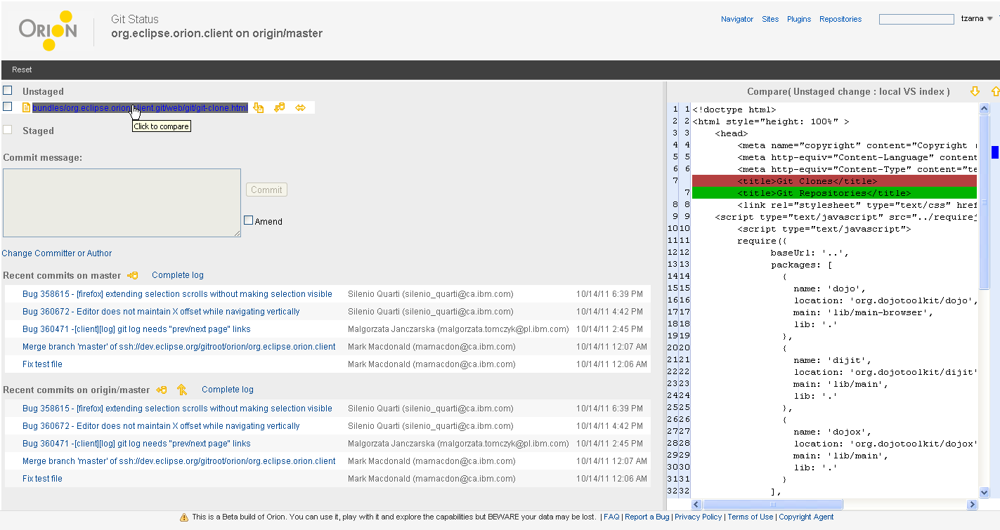

<a href="git-status-boris.html">Boris' mockup</a> from <a href="https://bugs.eclipse.org/bugs/show_bug.cgi?id=336116#c14">bug 336116</a>



<map name="map">
  	<area shape="rect" coords="1165,18,1237,41" href="git-repositories.html"/>
  	<area shape="rect" coords="187,377,283,403" href="git-log.html"/>
</map>